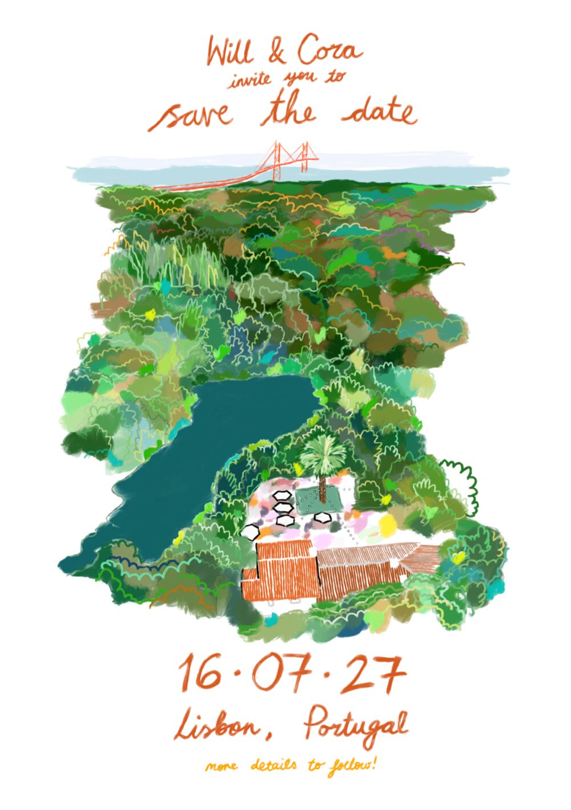

Want to come to our wedding?
(looks like you have only one option!)
Great!
But that can’t be that easy. Let’s see if you deserve it.

(looks like you have only one option!)
But that can’t be that easy. Let’s see if you deserve it.